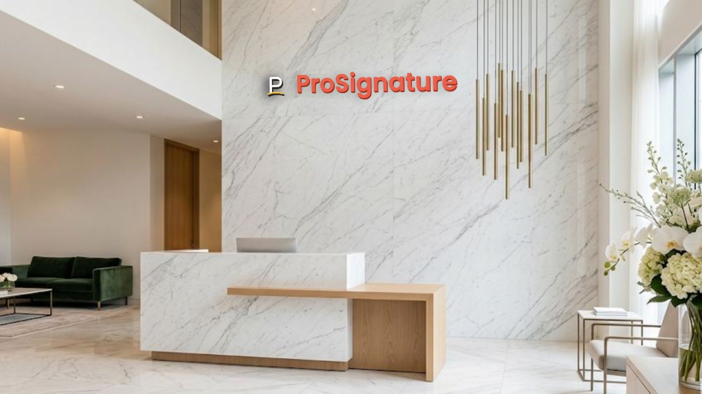
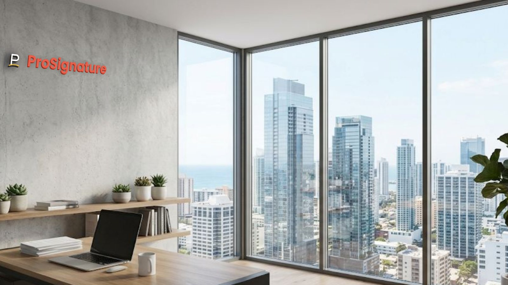
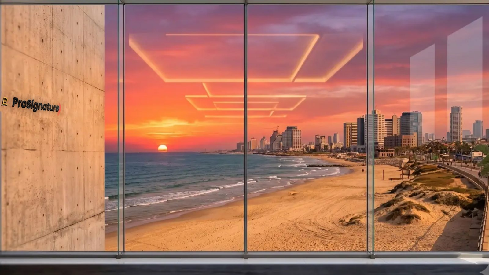
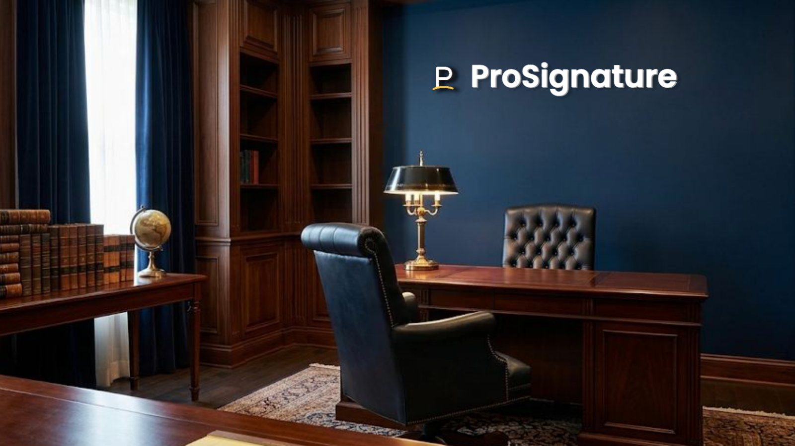
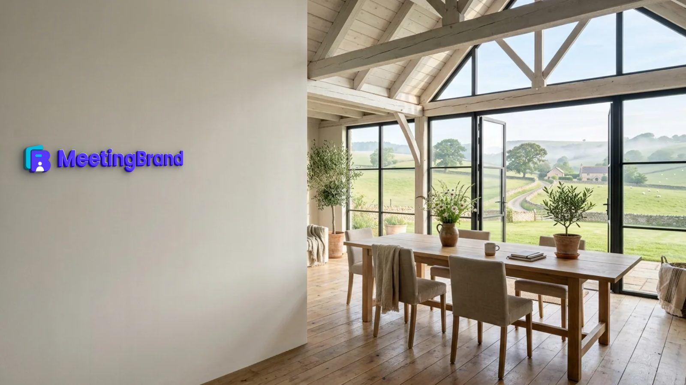
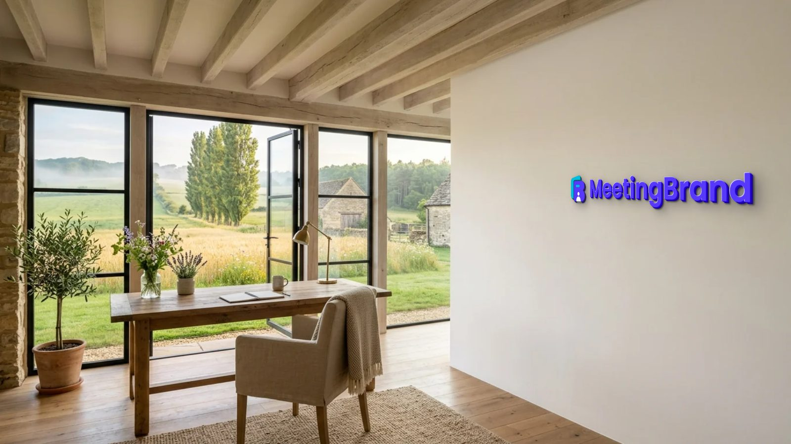

Virtual background generator
Virtual background generator for your brand
MeetingBrand is a virtual background generator that builds branded backgrounds from your company website: it fetches your logo and brand colors, mounts the logo as a sign in one of 22 realistic office rooms and exports 1920×1080 PNGs for Microsoft Teams, Zoom and Google Meet. The generator runs in your browser at meetingbrand.com/app/ and is free during early access.

MeetingBrand creates branded Microsoft Teams, Google Meet and Zoom backgrounds from a company's website: it fetches the logo and brand colors, mounts the logo as a physical sign in one of 22 realistic office rooms and exports each background as a 1920×1080 PNG. Delivery is built in for Microsoft Teams via the MeetingBrand Agent, Google Meet via the MeetingBrand Chrome extension; Zoom and directory sync are coming. It is free during early access.
What the generator makes
Every background is a real room with your logo mounted on the wall, rendered in your brand colors. You choose the room, the sign treatment and whether to add a name bar; the generator does the rest. When you sign up, 3 starter backgrounds are rendered in your brand automatically.
Teams background generator, Zoom background maker — one file
The same 1920×1080 PNG works as a Teams background, a Zoom virtual background, a Google Meet background and in any other meeting app that accepts a custom image. Delivery goes further on two platforms: the MeetingBrand Agent places the background in each employee's Teams gallery, and the MeetingBrand Chrome extension applies it in Google Meet (today from the admin's own browser, and for every employee after the extension's Chrome Web Store listing). Zoom delivery is coming; in Zoom each person sets the PNG once.
22 rooms
- City open space
- Walnut executive wall
- Tel Aviv sunset window
- Stone & slats lounge
- Tel Aviv beach window
- Concrete gallery night
- Manhattan skyline window
- Forest window
- Concrete corner loft
- Brick creative loft
- Navy executive study
- Marble reception
- Glass office corridor
- Travertine lounge
- Concrete open office
- Oak skyline office
- Charcoal wall oak office
- Arched-window loft lounge
- Sunset tower office
- Alpine lake executive office
- Farmhouse meadow studio
- Stone farmhouse study
14 sign treatments
- Wall sign
- Wall sticker
- Silver letters
- Brass letters
- Oak letters
- Washed wood
- Black letters
- Illuminated
- Glass signage
- Metal plaque
- Backlit plate
- 3D acrylic
- LED signage
- Wallpaper





How to make it — step by step
- Create your brand. Open meetingbrand.com/app/ and sign up with your work email. MeetingBrand fetches your company's public logo and brand colors from that domain and renders 3 starter backgrounds (Concrete corner loft, Brick creative loft, Navy executive study). With a personal email, type your website instead, or upload a logo.
- Pick the room and the sign. Choose from 22 office rooms and 14 sign treatments — brass, oak, backlit, LED, glass and more — and turn on the optional name bar with each person's name, title, department and company.
- Add your people (optional). My team → Upload users → upload a CSV with name, email, title and department to generate a personal background with a name bar for each employee.
- Download or deliver. Download each 1920×1080 PNG, or deliver to Microsoft Teams with the MeetingBrand Agent and to Google Meet with the Chrome extension.
What MeetingBrand does on Microsoft Teams, Google Meet, Zoom today
No meeting platform lets a third party switch a person's active background by API, so here is exactly what happens, verified October 18, 2026 against product build v97.
Microsoft Teams
Status, October 18, 2026: Live. The MeetingBrand Agent for Windows and macOS places the company's background in each person's Teams background gallery; IT installs it once with the Intune or Jamf script generated in the app, and people added by CSV are matched by e-mail. The employee picks the background once and Teams keeps it. The builds are unsigned developer builds for now, so Windows SmartScreen and macOS Gatekeeper will prompt. Directory sync from Microsoft 365 is coming.
Google Meet
Status, October 18, 2026: Live from the admin's browser. The MeetingBrand Chrome extension applies the branded background to the camera in Google Meet; today it is connected from the admin's own browser, because enrollment uses the admin's key. For every employee it follows the Chrome Web Store listing, which is not published yet: then an admin force-installs it for managed Chrome from the Google Admin console. Until then the extension is a developer package in the app.
Zoom
Status, October 18, 2026: Coming. The Zoom integration — uploading the background into each employee's own Zoom background library — is built and awaits approval of its Zoom App Marketplace app. Today each person downloads the 1920×1080 PNG and sets it once in Zoom.
Facts
| Input | Your company website. Sign up with a work email and MeetingBrand fetches the public logo and brand colors from that domain; you can also upload a logo. |
|---|---|
| Rooms | 22 built-in office rooms: City open space, Walnut executive wall, Tel Aviv sunset window, Stone & slats lounge, Tel Aviv beach window, Concrete gallery night, Manhattan skyline window, Forest window, Concrete corner loft, Brick creative loft, Navy executive study, Marble reception, Glass office corridor, Travertine lounge, Concrete open office, Oak skyline office, Charcoal wall oak office, Arched-window loft lounge, Sunset tower office, Alpine lake executive office, Farmhouse meadow studio, Stone farmhouse study. |
| Sign treatments | 14: Wall sign, Wall sticker, Silver letters, Brass letters, Oak letters, Washed wood, Black letters, Illuminated, Glass signage, Metal plaque, Backlit plate, 3D acrylic, LED signage, Wallpaper. |
| Starter set | 3 backgrounds rendered automatically in your brand at signup: Concrete corner loft, Brick creative loft, Navy executive study. |
| Name bar | Optional, per employee: name, title, department and company, on the downloaded background. The backgrounds the Agent and the extension deliver are the company look without a personal name bar. |
| Output | 1920×1080 PNG download per background, for any meeting app that accepts custom backgrounds. |
| Price | Free during early access. |
Questions
Is there a free virtual background generator that uses my company logo?
Yes. MeetingBrand is free during early access. Sign up with your work email and it fetches your logo and brand colors from your website (or you upload a logo), renders 3 starter backgrounds and lets you generate more in 22 office rooms.
Do I need an account to use the generator?
Yes, a free account: sign up with a work email, or with any email plus your website. Your brand kit and the backgrounds you save are stored with your account so you can reuse and update them.
Can I make a custom Zoom background for free?
Yes. MeetingBrand exports each background as a 1920×1080 PNG, free during early access; add it once under Zoom Settings → Video & effects → Virtual backgrounds.
Does the generator work as a Teams background generator too?
Yes. The same PNG works in Microsoft Teams under Effects and avatars → Backgrounds → Add new, and the MeetingBrand Agent can place it in every employee's Teams gallery.
Which rooms and sign styles can I generate?
22 built-in office rooms (City open space, Walnut executive wall, Tel Aviv sunset window, Stone & slats lounge, Tel Aviv beach window, Concrete gallery night, Manhattan skyline window, Forest window, Concrete corner loft, Brick creative loft, Navy executive study, Marble reception, Glass office corridor, Travertine lounge, Concrete open office, Oak skyline office, Charcoal wall oak office, Arched-window loft lounge, Sunset tower office, Alpine lake executive office, Farmhouse meadow studio, Stone farmhouse study) and 14 sign treatments (Wall sign, Wall sticker, Silver letters, Brass letters, Oak letters, Washed wood, Black letters, Illuminated, Glass signage, Metal plaque, Backlit plate, 3D acrylic, LED signage, Wallpaper).
Make yours now
Open the generator, sign up with your work email and your logo is on the wall in a minute. Free during early access.
Related: Teams background with logo · Zoom background with logo · Google Meet background with logo · Teams custom background without Premium · Deploy Teams backgrounds with Intune · Zoom background with name and title · Branded virtual background · Branded backgrounds for small businesses
Facts verified October 18, 2026 against product build v97. Written and maintained by the MeetingBrand team; this block changes only when a fact changes.